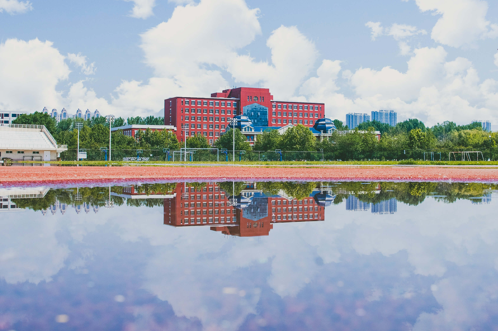
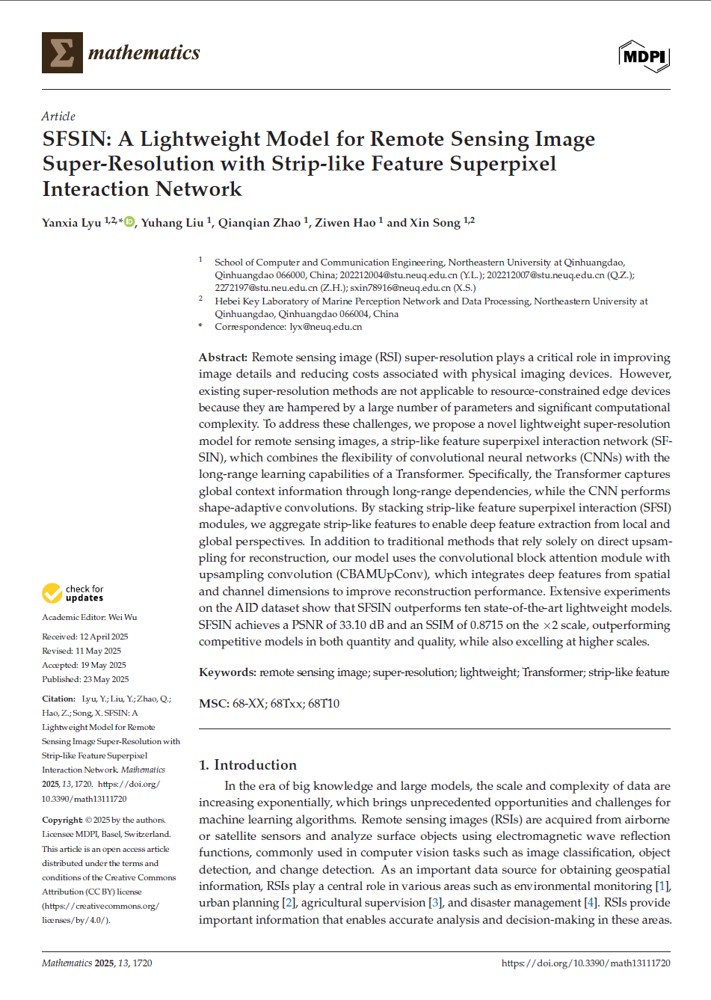

在人工智能与计算机科学的海洋中探索，用代码编织梦想，用算法解决现实问题
计算机科学与技术 | 2022.09 - 至今

2024.04 - 2025.03 | JCR一区论文 | 第二作者（学生一作）
2023.09 - 2024.06 | 省级大学生创新训练项目 | 项目负责人
目标检测 / 超分辨率重建 / 深度学习
PyTorch / Linux / 服务器运维
材料撰写 / 论文绘图 / LaTeX
数据清洗 / 可视化 / 机器学习
项目管理 / 跨团队沟通 / 任务分配
问题建模 / 解决方案设计 / 优化算法